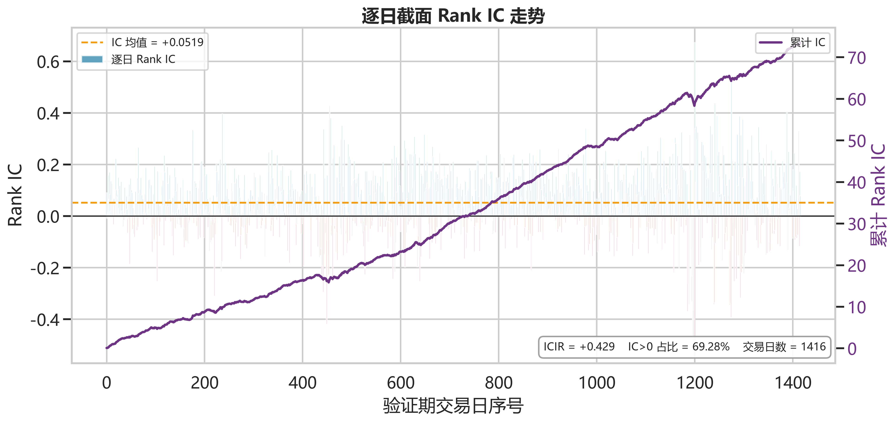
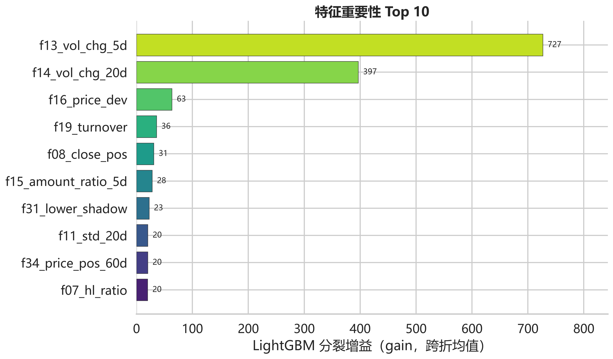
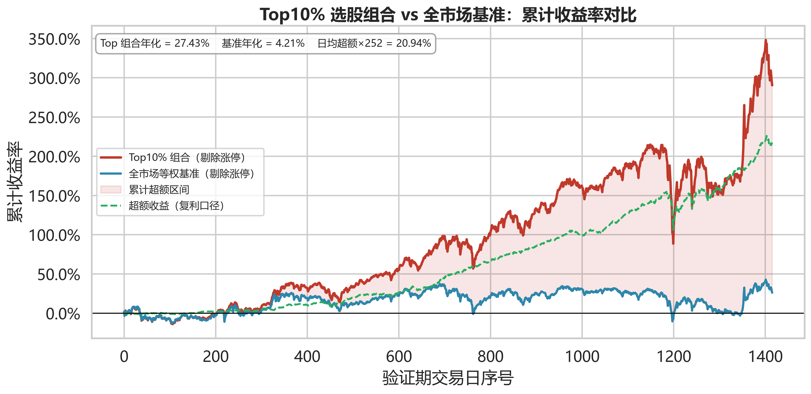

36 因子与因果 EMA 的截面排序方案
历史量价记录是量化选股的基础，但一日收益噪声高、市场结构随时间变化，单看预测相关性难以衡量信号的实际用途。本项目围绕赛题五提供的全市场 A 股日线数据，建立以未来一日收益为训练目标、以横截面排序为交付形式的完整分析流程。
方法采用 36 个量价、形态与位置因子，逐日截面标准化、5 折 Purged 时序交叉验证和 LightGBM 稳健回归，并对个股预测序列做因果 EMA 平滑。最终选择 span=20，五折早停树数的中位数为 153。验证期竞赛口径 Rank IC 为 0.0543、Top10% 年化超额为 0.2185、平均预测换手率为 0.1177，官方复合分为 0.3520。
测试期提交包含 1,599,600 条记录，竞赛口径预测换手率为 0.2395。测试集无标签，故不宣称测试期收益或 IC 已获验证。报告并列展示可交易口径，解释满面板占位行对低换手的影响，避免把复合分提高等同于收益预测能力提升。
赛题要求对每个股票与交易日组合预测未来一天收益。本项目将其转化为“当天收盘后，哪些股票在下一日更有可能取得相对较高收益”的横截面排序问题。研究分别回答数据是否可信、模型是否使用未来信息、信号在不同时间段是否稳定，以及组合换手是否可接受四个问题。
官方评分为 IC 均值的 40%、年化超额的 30% 和低换手奖励的 30%。因此不能只最大化拟合精度，也不能只追求静态排名。本方案目标是在排序信号与时间稳定性之间作明确、可复核的取舍。
关键词：原始量价数据；截面排序；Purged CV；LightGBM；EMA 平滑。
训练集覆盖 2018-01-02 至 2024-12-31，共 1,699 个交易日；测试集覆盖 2025-01-02 至 2026-06-08，共 344 个交易日。每天都包含全部 4,650 个股票代码，属于满面板结构。价格为后复权开高低收，成交量以股计、成交额以元计，另有涨跌停标志。
| 数据集 | 记录数 | 交易日 | 股票数 |
|---|---|---|---|
| 训练集 | 7,900,350 | 1,699 | 4,650 |
| 测试集 | 1,599,600 | 344 | 4,650 |
训练标签约 14.45% 缺失。有效标签的中位数为 0，标准差约 2.99%，1% 与 99% 分位数约为 -8.35% 与 +10.00%，说明一日收益具有尖峰厚尾特征。年度均值从 2018 年的 -0.126% 到 2024 年的 +0.032%，年度标准差在 2024 年升至约 3.49%，市场状态并不稳定。涨停与跌停行分别约占 1.45% 和 0.59%，因此训练筛选和官方评价口径需要分开说明。缺失标签行不参与模型拟合，但保留它们的时间位置用于滚动计算。无行情行包含未上市、已退市和区间内停牌；它们并不都是真正停牌。vol、amount 缺失不能当作零成交量解释。
| 指标 | 验证段 | 测试期 |
|---|---|---|
| 无行情行占全部记录 | 12.16% | 2.80% |
| 竞赛口径 Top10% 中日均占比 | 72.15% | 25.54% |
| 无行情行内：上市前 | 95.4% | 74.6% |
| 无行情行内：退市后 | 3.1% | 17.6% |
| 无行情行内：区间内停牌 | 1.5% | 7.8% |
模型将缺失因子按当日截面中位数处理后，会给这些行较高排序。测试期无行情行的截面百分位中位数约 0.977，约 89.5% 处于前 10%。这些近乎不变的占位记录会压低官方预测换手率；收益评价则剔除缺失标签，两个指标的样本口径不同。
本地核查中，amount/vol 的量级与收盘价相符，故未把 vol 误换算为“手”。标签对齐检查支持 y_ret_1d 对应 t→t+1 收益：当天一日收益与上一行标签的秩相关约 0.9993，同一行相关仅约 0.036。这是对齐证据，不替代完整防泄露设计。描述性统计还显示，收益厚尾和年度波动变化会让单一时期的验证分数产生较大不确定性。
因子仅使用当天及之前的官方字段。先在个股完整行情时间轴上计算，再筛选拟合样本，避免先删除标签缺失或涨跌停日期导致滚动窗口变形。短长期收益率显式关闭缺失价格的前值填充，防止跨股票串值或制造人工收益。
| 类别 | 数量 | 代表信息 |
|---|---|---|
| 动量 / 反转 | 7 | 1/5/10/20日收益、反转、均线偏离 |
| 日内形态 | 4 | 振幅、区间占比、收盘位置、跳空 |
| 波动率 | 4 | 短长期收益波动、偏度 |
| 量价协同 | 6 | 量能变化、成交额强度、均价偏离 |
| 流动性 / 规模 | 4 | 相对成交量、对数成交额、量波动 |
| Beta 代理 | 1 | 对昨日截面中位收益的敏感度 |
| 补充动量 / 形态 / 位置 | 8 | 2/60日收益、影线、实体、价格位置 |
| 截面排名 | 2 | 1/20日收益的当日百分位 |
全部因子在当日截面做 Z-Score，缺失按当日中位数填充并裁剪到 ±5。截面排名不跨日期。测试期拼接训练尾部 90 个连续交易日，以支持 60 日窗口；拼接只使用测试日前的历史。
采用按交易日划分的五折扩展窗口验证，每个外层验证段之前留 6 个交易日 embargo。每折训练期内部末尾 60 个交易日用于早停，并再次隔离；外层验证不参与树数选择。得到树数后，在该折完整训练区间重拟合用于样本外预测。
模型为 LightGBM 回归，使用 Huber 损失处理收益厚尾；学习率 0.03、叶子数 63、最大深度 6、叶子最少样本 300、L2 正则 5.0。最终以五折树数中位数 153 在全部合格样本上训练。原始回归输出转为每日 0～1 百分位分数，并做 EMA20；最终 pred 是排序信号，不是经过校准的收益率数值。当前已验证的直接基线是同一模型的未平滑版本；它能说明平滑对换手的影响，但没有替代线性模型或简单因子基线，因此不能把复杂模型的增益单独归因于 LightGBM。
验证段为 2019-03-06 至 2024-12-31，共 1,416 个交易日。未平滑模型 IC 为 0.0620，平滑后为 0.0543；IC 正向天数比例为 69.35%。图1 展示逐日波动和累计信号，说明平均正相关并不意味着每天都有效。

图2 使用五折平均 gain，不能与最终 153 棵树模型的 gain 混用。成交量 5 日变化率和 20 日变化率分别为 727、397，其次是均价偏离度 63、相对成交量 36、收盘位置 31。重要性表明模型使用了哪些分裂信息，并不证明这些变量具有稳定因果关系。

与旧 26 因子模型相比，全验证竞赛复合分提高约 0.0086，其中约 0.0055 来自换手；可交易口径总提升仅约 0.0012。最近 250 日年化超额从 0.1983 降至 0.1906，故不能把扩展因子解释成收益端已经得到确定改善。36 因子与 EMA 跨度的筛选使用了已查看的验证段，未保留完全独立的留出段，下文各项验证分数因此不能视为独立测试结果。
竞赛提交对齐官方脚本：IC 和超额只用有标签记录，超额与换手按规则剔除涨停。可交易对照将无行情行 pred 置为 -999，使它们不进入 Top10%，作为业务约束。它不代表更准确的预测，也不是完整实盘回测。
| 方案 | Rank IC | 年化超额 | 换手率 | 综合分 |
|---|---|---|---|---|
| 未平滑 | 0.0620 | 0.2711 | 0.8734 | 0.1441 |
| 竞赛 EMA20 | 0.0543 | 0.2185 | 0.1177 | 0.3520 |
| 可交易 EMA20 | 0.0544 | 0.2192 | 0.2984 | 0.2980 |
Top10% 超额按官方定义为逐日平均超额乘 252；不是 CAGR，也未扣除交易成本。两种口径的收益和 IC 接近，主要差别在无行情行参与换手计算。

| 窗口 | Rank IC | 年化超额 | 换手率 | 综合分 |
|---|---|---|---|---|
| 最近250日 | 0.0556 | 0.1906 | 0.2440 | 0.3062 |
| 最近500日 | 0.0605 | 0.2147 | 0.2073 | 0.3264 |
末尾 250 日参与选参，不能当作独立留出成绩。测试期竞赛口径换手率为 0.2395（可交易口径为 0.2869），高于全验证段的 0.1177。验证段 Top10% 中无行情行的日均占比为 72.15%，这些近乎不变的占位记录压低了换手率；测试期该比例降至 25.54%，因此换手率升高不能单独作为模型退化的证据。全验证段 0.3520 主要受早期无行情行和低换手奖励抬高；最近 250 日只有 0.3062，测试期只能直接核对换手，不能把 0.3520 当作预计最终得分。测试集没有标签，无法给出其 IC 或超额收益。
EMA 为因果平滑：s_t=αp_t+(1−α)s_(t−1)，其中 α=2/(span+1)。短跨度先过滤噪声：末尾窗口 IC 从 span=0 的 0.0541 升至 span=5 的 0.0588；更大跨度则逐渐减弱一日信号时效。
| span | 半衰期/日 | 末尾250日IC | 末尾综合分 | 早期综合分 |
|---|---|---|---|---|
| 0 | 0.0 | 0.0541 | 0.136 | 0.146 |
| 5 | 1.7 | 0.0588 | 0.226 | 0.308 |
| 12 | 4.1 | 0.0578 | 0.274 | 0.355 |
| 20 | 6.9 | 0.0556 | 0.306 | 0.362 |
| 30 | 10.4 | 0.0527 | 0.325 | 0.361 |
| 60 | 20.8 | 0.0454 | 0.347 | 0.354 |
末尾选参窗口偏好 span=60，但早期 1,166 日竞赛综合分在 span=20 更高。全验证段由 20 增至 60，IC 从 0.0543 降至 0.0430、年化超额从 0.2185 降至 0.1716，复合分却仅增加约 0.0005。本方案主动保留 EMA20，不声称它是扩展网格自动选择的最优参数。当前测试预测从测试集首日重新初始化 EMA，没有把训练尾部的预测状态带入；span=20 意味着前约 20 个交易日仍在建立平滑状态，因此早期预测可能受冷启动影响。没有独立标签对照，本报告不把冷启动差异改写成收益结论。
早期区间未参与这次末尾窗口选参，但此前已被查看，不能称为完全未触碰的独立留出。可交易口径也未提供唯一选中 20 的纯分数规则。训练使用 Huber/L2 早停，而官方评分是 Rank IC、Top10% 超额和换手的加权函数，训练目标与评分目标并不完全一致；当前报告把它作为局限，而不是声称已经优化解决。最终选择是对评分、收益时效性和解释性的综合判断。概括而言，更长的 EMA 跨度虽能在评分公式中继续压低换手、抬高复合分，但代价是 IC 从 0.0543 降至 0.0430、年化超额从 0.2185 降至 0.1716，损耗了一日收益信号的敏锐度；选择 span=20 是在竞赛打分、一日信号时效与实盘可解释性之间的客观取舍。
官方换手率是 Jaccard 距离 d。等规模组合单日实际换出比例为 r=d/(2−d)。在可交易选参窗口，未平滑时每天替换约 76% 持仓，EMA20 后约 17%。若每次换仓买卖合计费率假设为 0.3%（示意值，实际需按券商佣金、印花税、过户费和市场冲击成本重新测算），采用日度 r 平均乘 252 的简单估算，年成本约由 57% 降至 12.5%。这是假设敏感性分析，不是已实现净收益，也未实测冲击成本。
正式提交记录数为 1,599,600，键集合无重复、无缺失且与测试集完全一致；预测有限并位于 0～1。文件按交易日和代码排序，非测试输入原始行序。模型保存真实因子名，结果摘要和三张图来自同一次正式运行。
可将方案作为每日收盘后的研究候选池服务：收盘后先校验字段和行情状态，再计算因子、输出竞赛排序分数，同时生成剔除无行情行的可交易候选池。研究员看到每只股票的分数、主要因子、近 20 日排名变化和数据状态；系统对未上市、退市、停牌、涨跌停分别标记，不把占位行当作实际持仓。
| 环节 | 关键动作 |
|---|---|
| ① 数据校验 | 字段完整性、行情状态、涨跌停与无行情行标记 |
| ② 因子与预测 | 36 因子截面标准化 → LightGBM 排序 → EMA20 |
| ③ 风控过滤 | 竞赛 / 可交易双轨；Top10% 复核流动性与交易限制 |
| ④ 监控回收 | 次日回收 IC、超额、换手、无行情行占比；漂移则暂停信号 |
一个可执行的日流程是：数据检查通过后生成候选池，研究员从前 10% 中复核流动性和交易限制，记录最终入选与剔除原因，次日回收日度 Rank IC、Top10% 超额、预测换手率和无行情行占比四项指标，同时监控预测分布漂移。达到预设阈值才进入观察名单，连续异常则暂停信号。这样产品价值是降低研究筛选与复核成本，而不是替代投资决策；当前尚未完成实盘部署、行业中性化、权重优化或容量测算，不能宣称已产生投资收益。
上线验证应增加实际成交价格、费用、停复牌与涨跌停执行规则，另做前向观察。模型冻结后，版本更新须记录参数、数据时间和产物，防止训练代码与最终提交脱节。
项目形成了完整的量价排序流水线，解决了股票分组、连续窗口、截面归一化、内层早停与最终全量训练的一致性问题。36 因子与 EMA20 在已观察验证框架下得到 0.3520 竞赛复合分，测试期可直接确认的是预测换手率下降，而非收益预测能力已经提高。
主要局限包括：测试集无标签；因子筛选使用已查看验证段；满面板无行情行影响低换手；EMA20 为判断性选择；pred 是排序分数而非校准收益率；可交易对照未覆盖所有执行约束。报告主动披露这些限制，以可复现的证据替代过度承诺。
后续改进方向：为因子与参数筛选引入前向验证窗口，比较多个 EMA 跨度在独立留出段的稳定性；测试期预测改为暖启动并与冷启动对照；在可交易口径下补全涨跌停、停牌与 ST 限制的完整回测。
数据来源为赛题五提供的训练集与测试集字段；评价依据为赛题公布的 Rank IC、Top 组年化超额收益和预测换手率加权规则。报告中的图表均来自本项目在训练数据上的时序验证结果，未使用外部行情或外部收益标签。